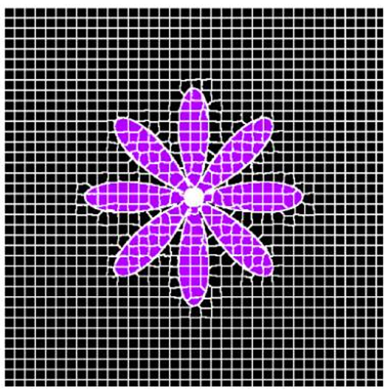
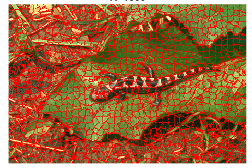
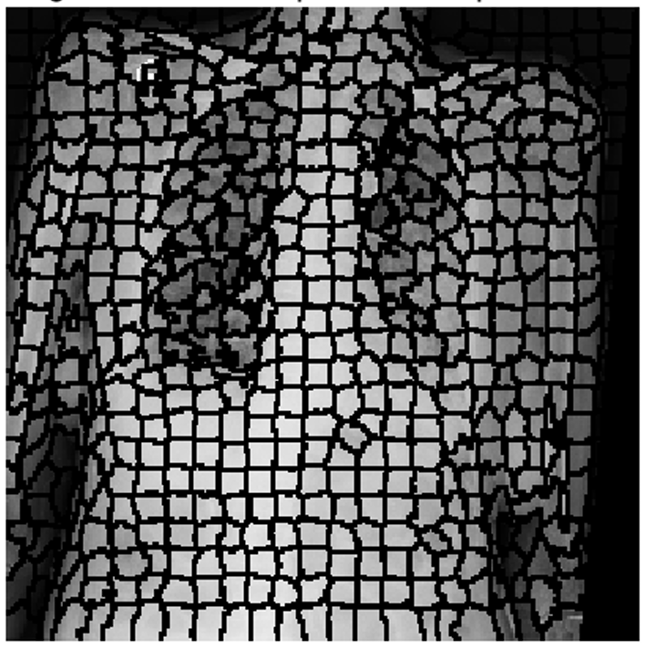

IMAGE / 01
Segmentation en superpixels — SLIC
Implémentation et étude de l’algorithme SLIC pour regrouper les pixels en régions perceptuellement cohérentes. Analyse de l’influence du nombre de superpixels K et du paramètre de compacité m, avec évaluation par Boundary Recall et ASA.
Segmentation localeQualité des frontières + adhérence aux régions de référence


